骑士遍历问题
在棋盘游戏里，“骑士”只能水平移动两个方格，垂直移动一个方格，或垂直移动两个方格，水平移动一个方格。
最古老最有趣的棋盘游戏就是骑士遍历，这个游戏可以追溯到6世纪的印度，但是莱昂哈德·欧拉（1707—1783）是第一个对这个问题进行认真分析的人。
这个“骑士”棋子是否能够走遍棋盘中所有的方格，且每个方格只走一次呢？
从数学角度去看，这是一个图形问题。找寻一条封闭的骑士遍历路线就是在图论里找寻哈密顿圈的一个例子（详见后文）。
封闭的遍历路线只有在双面棋盘上才能找到。欧拉从中发现了许多不同寻常的对称性，并且按照这种方式创造出了一些视觉模式，这些模式具有的美感让人愉悦。
你能在下一页的小棋盘里找到骑士的遍历路线吗？
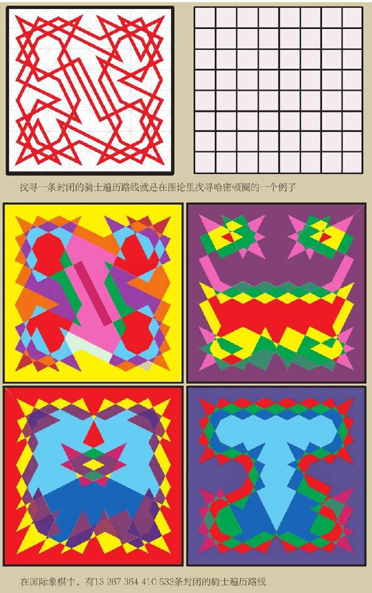
“骑士”跨越与不跨越的“遍历”
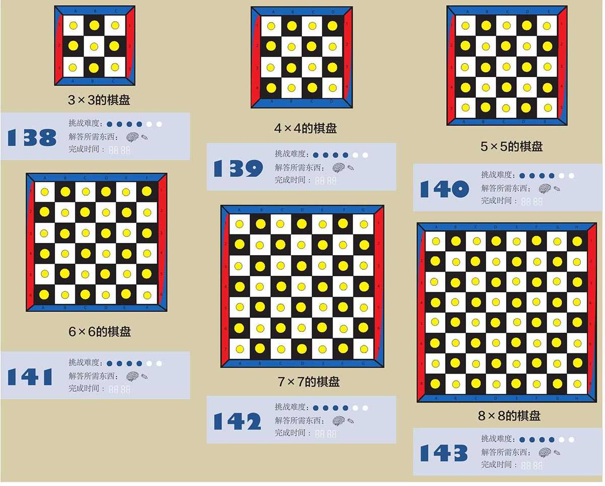
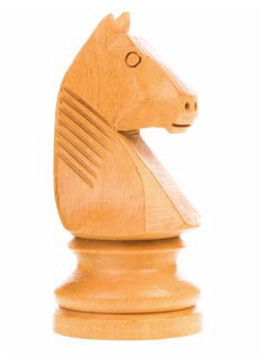
在1968年出版的《消遣数学期刊》里，L.D.亚伯勒（Yarbrough）提出了“骑士遍历”这个经典问题的一个变体。骑士棋子除了不能在同一个方格里经过两次之外（在封闭的“遍历”中除外，因为最后一步会回到一开始的方格，否则，这就是一个开放的“遍历”），还不能穿越自己所走的道路（这条道路是由每一步的始点与终点之间的直线构成的）。
衍生出来的这一变体叫做“不跨越的骑士遍历”。
马丁·加德纳在他的著作《数学循环》一书中就指出了这个问题，并且解释说，亚伯勒在6×6的棋盘里发现的遍历步数，能够从原先的16步提升到17步。
唐纳德·克努特（Donald Knuth）写了一个程序，主要是对3×3到8×8的所有棋盘进行研究。遍历一次需要的步数分别是2，5，10，17，24与35。
纽结理论
纽结理论最基本的一个问题，就是承认两个或两个以上的纽结是等价的。这是一个难题。
两个纽结中，如果其中一个纽结能够转变成另一个纽结，那么这两个纽结就是等价的。我们可以用算法去解这个题，但是这个过程是相当耗时的。
一个特例就是从一个真正的纽结中找出松结。左边与中间的图形显示的是两个松结。你猜最右边的图形显示的是松结还是一个真正的纽结？
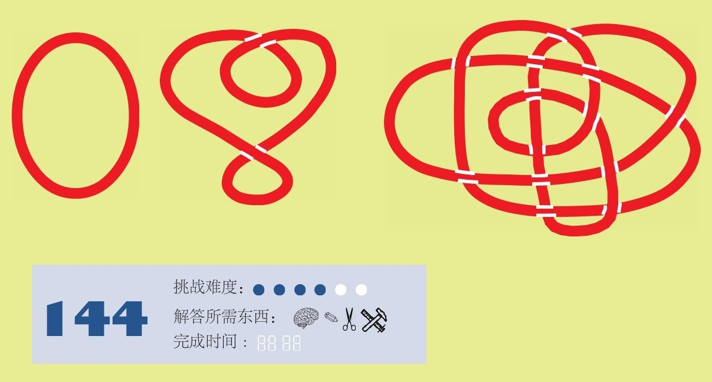
三叶纽结
三叶纽结是最简单的一种纽结形式，这种纽结有两种主要的形式，如右边的两个图形所示：左手三叶结与右手三叶结。
无论你如何去进行尝试，都不可能将左手三叶结变成右手三叶结。二者的区别在于一个是在上面交叉，一个是在下面交叉，而不是根据曲线所处的方位进行区分。
当一个三叶结被投射在一面墙上时，你能准确地指出这个三叶纽结是两个版本中的哪个吗？认对的概率有多大呢？
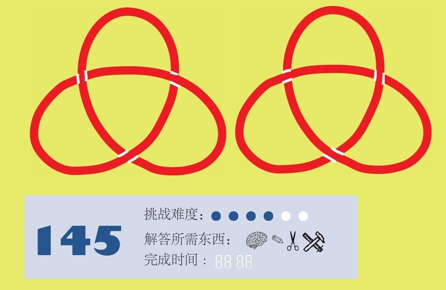
纽结表
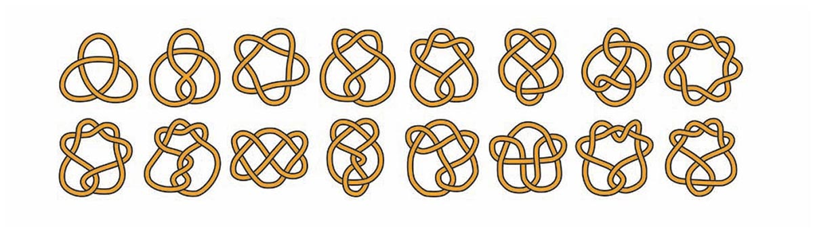
如图所示，这些纽结都是按照复杂程度由简到繁排列的。衡量一个纽结的复杂程度通常就是看它的交点数量，或纽结在一个最简单的平面投影里显示的双点的数量。三叶结是唯一一种有3个交点数的纽结（不考虑镜像）。第八个图形的纽结是交点为4的唯一纽结。
交叉5次可以有2个结，交叉6次可以有3个结，交叉7次可以有7个结。再往后数字就会激增。在最小投影的情况下，交叉13次或更少可以造成12965个结，交叉16次或更少可以造成1701935个结。上图是16个最简单的纽结图形。
立方格子结与三叶纽结
在拓扑学领域里，三叶纽结是最简单的一种非平凡纽结。可以将一个普通的单线结松散的两端连接起来，形成一个三叶结，即打结的环。
三叶纽结作为最简单的纽结，是研究数学纽结理论的基础。这一理论在拓扑学、几何学、物理学以及化学方面得到了广泛的应用。
立方格子结
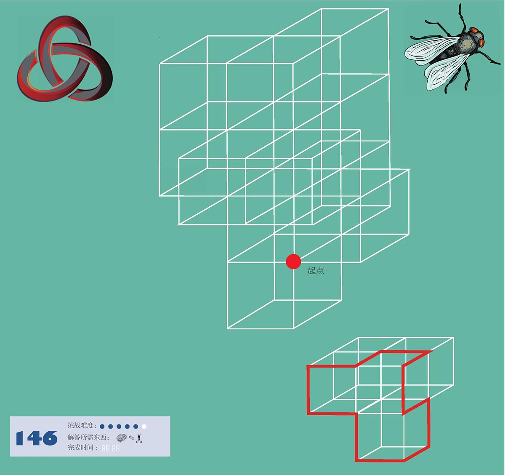
想象一只苍蝇沿着立方格的边形成的封闭链条移动。
这根链条自身绝对不能接触或相交，在每个角上只能有两根线相交。右图显示的就是12条线形成的封闭链条。
在一个立方格子里，形成一个三维空间纽结的最短封闭链条是什么呢？
高斯的十七边形——1796年
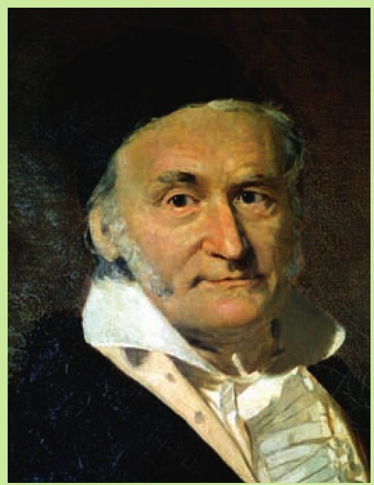
欧几里得证明了可以通过圆规与直尺画出正多边形的方法，其中就包括等边三角形、正方形、五边形以及衍生出来的图形（正六边形、正八边形、正十边形、正十六边形、正二十边形、正二十四边形、正三十二边形、正四十边形、正四十八边形、正六十四边形，等等）。
19岁的时候，高斯（1777—1855）就找到了画出正十七边形的一种具有美感的方法，这让他深信自己应该将一生的精力投入到数学研究上。对于推动数学的发展，这确实是一个无比幸运与正确的决定。
高斯对他发现正十七边形的成就非常满意，甚至让人在他的墓碑上画上正十七边形。石匠对此表示反对，说正十七边形的形状与一个圆形非常像，因此很难雕刻。
高斯运用他的数学才华判断出，在希腊数学的限定之下，哪些建构是可行的，哪些是不可行的。他证明了一系列可构造的多边形都与费马质数存在联系。所谓费马质数就是指一个费马数，这是以第一个研究这个问题的人——皮埃尔·德·费马——的名字命名的，费马数是以正整数形式出现的数字，其形式是F=22 n n+1，其中，n代表一个非负整数。排在前列的几个费马数是：3，5，17，257，65537……4294967297。
构造十七边形的方法有很多种，下面要说的这种方法是在1893年被发现的。
十七边形最具美感的构造方式——1893年
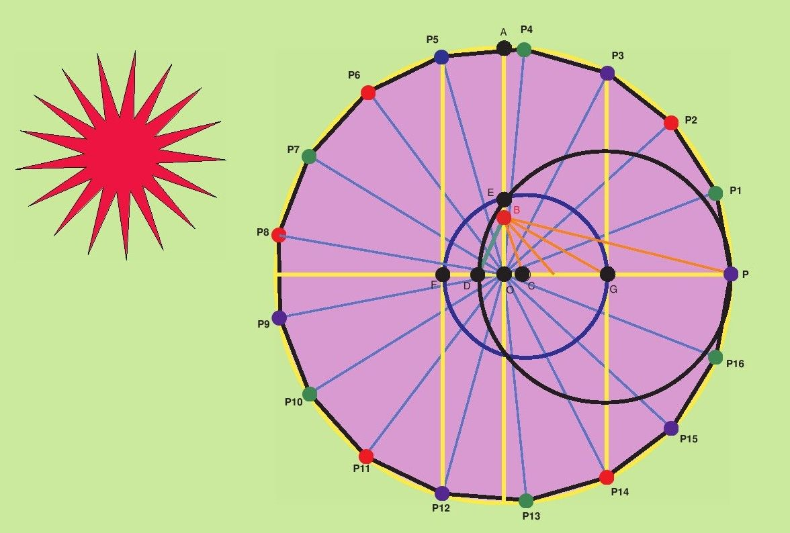
十七边形最具美感的构造方式是在1893年被发现的。
具体的操作方法如下：画一个圆，以O点为圆心，然后在圆上选择一个点P。接着，在圆上找到另外一个点A，让线段OA与线段OP垂直；在线段OA上选择一个点B，让线段OB的长度为线段OA长度的1/4；在线段OP上找到一个点C，让角OBC是角OBP的1/4；在线段OP（延长线）上找一个点D，让角DBC为45°；让E点表示圆DP与线段OA的交点。
此时，经过点E画一个以点C为圆心的圆，点F与点G表示该圆与线段OP相交的两个点。接着，如果从点F、G引出两条垂直于线段OP的线段，那么它们就会在大圆上形成P5与P3两个点，如图所示。点P、P3与P5代表着正十七边形的第0个、第3个以及第5个顶点。通过对角P3-O-P5进行二等分可以确定点P4的位置，依此类推。
七巧板——1802年
七巧板最初是由中国人发明出来的，具体的发明时间不详。七巧板是人类已知的关于剖分问题的最古老的拼图游戏。七巧板又被称为中国七巧板，与十四巧板很类似。
七巧板由七个被称为坦斯的部分组成。在《坦斯的第八本书》里，描述了有关七巧板的虚构的历史故事，据说它在4000多年前就已经被发明出来了。
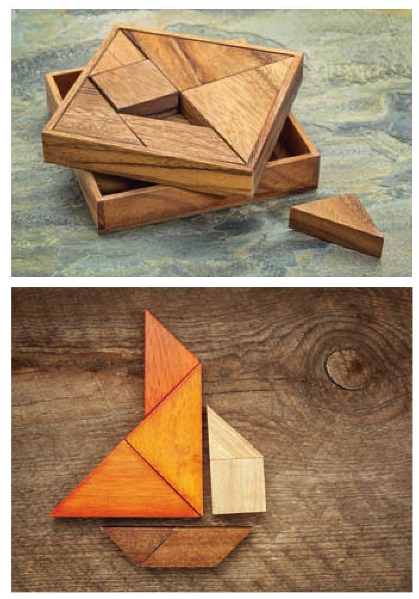
七巧板最早的模型可以追溯到1802年。1815年，这个游戏传到了美国。1817年到1818年间，全世界范围内掀起了一股拼图游戏风潮，七巧板风靡一时。七巧板所具有的精妙性及各种可能的组合，人们只有在游戏中才会体验到。
在游戏史上，真正具有原创性的发明都必然会在世界各地形成全新的思想、催生各种版本的游戏变体与全新的游戏。先不谈拼图游戏具有的打发时间的消遣功能，很多变异版本的游戏不仅涉及正方形的剖分问题，而且还涉及长方形、圆形、蛋形、心形或其他图形的剖分。今天，依然还有十多种变异版本的七巧板，但是，也许七巧板原始版本才是这一类游戏中最好的。
七巧板拼图游戏促使人们创造出了许多让人着迷与具有挑战性的拼图游戏，比如，七巧板多边形、七巧板悖论（这有点像著名的杜登尼悖论游戏）以及其他游戏。如果你解答了这里所提出的问题，那么你就可以创造属于自己的七巧板游戏，这将会给你带来一段回报颇丰且有教育意义的消遣时光。喜欢玩七巧板游戏的名人包括埃德加·爱伦·坡、路易斯·卡罗尔等。拿破仑在流放期间，也花了许多时间发明新的七巧板游戏，并且解决了不少七巧板游戏难题。
经典的七巧板游戏
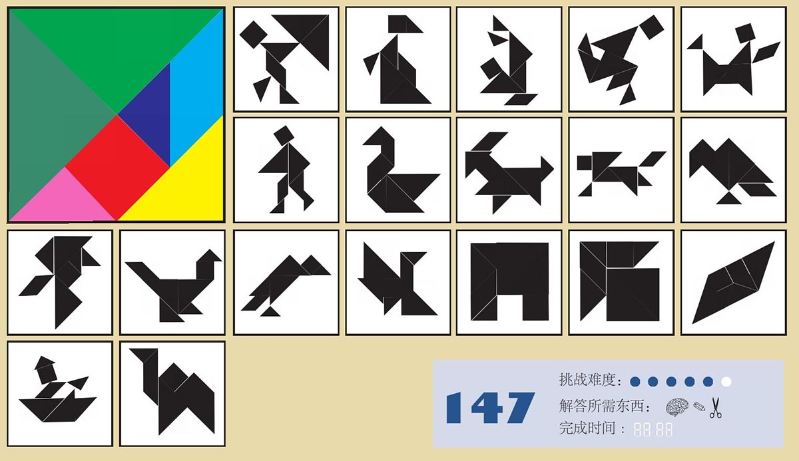
将七巧板的七个部分复制下来，给黑影涂上相应的颜色。
七巧板悖论
如图所示，这些图形都是用七巧板的七块板创造出来的。
你能解释这些拼图之间的细微差别吗？（七巧板悖论问题收录在杰瑞·斯洛克姆所著的《七巧板之书》里，该书汇集了山姆·劳埃德、亨利·杜登尼、詹尼·萨尔科内等人的著作）。
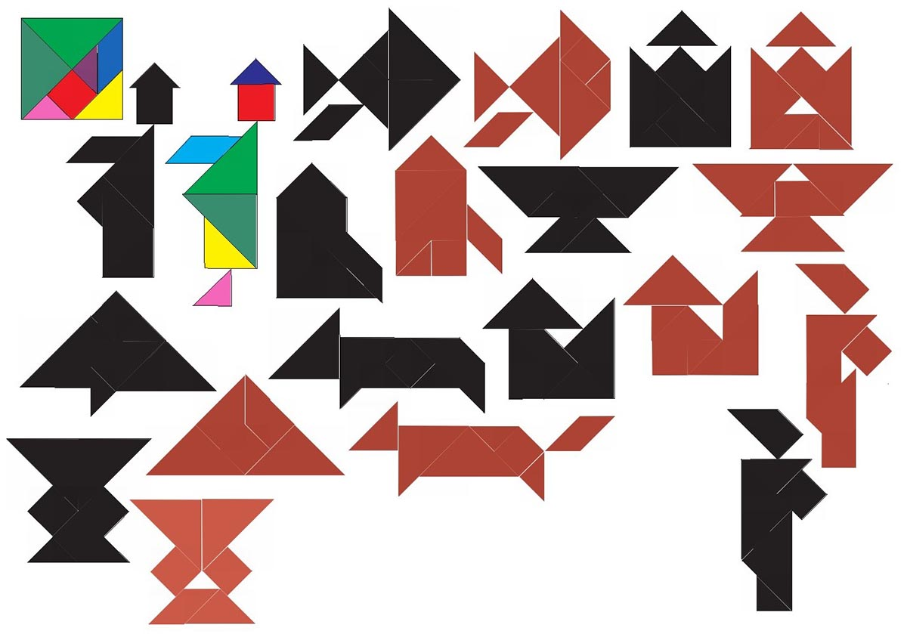
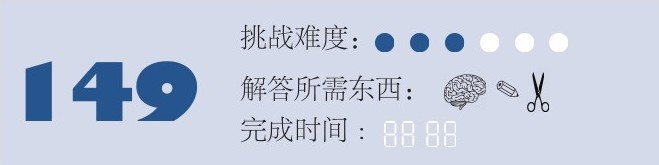
七巧板凸多边形
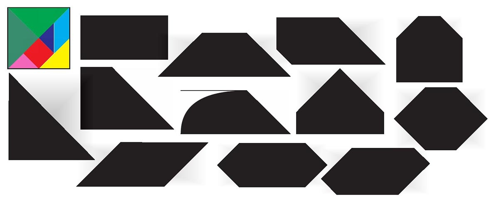
可以说，七巧板图形几乎存在着无限的可能性。但有趣的是，潜在的凸多边形数量却是非常有限的。
两位中国数学家证明，利用七巧板的七块板只能够形成十三种不同的凸多边形：一个三角形、六个四边形、两个五边形与四个六边形。你可以自己试一试。
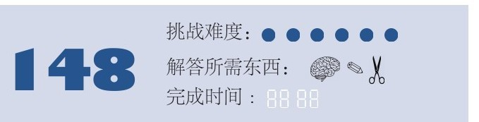
马尔法蒂的大理石问题——1803年
在数学领域里，一下子得出一个错误结论，实在是太容易了。这样的情况经常发生。
马尔法蒂问题就是一个兼具美感与说服力的例子。
1803年，意大利数学家吉安·弗朗西斯科·马尔法蒂（1731—1807）提出，三个大理石圆柱体（有必要的话，这三个圆柱体的大小不同），当它们从一个直角三棱柱中被雕刻出来时，它们的总截面最大。
这与在任意一个三角形内装入三个互不重叠的圆，求这三个圆最大总面积的问题是一样的。
现在，这个问题被称为大理石问题（马丁在1998年提出的）。马尔法蒂认为，他知道这个问题的答案。他提出，当三个圆（马尔法蒂圆）彼此相切，并且分别与这个三角形的两条边相切时，就可以得到问题的答案。
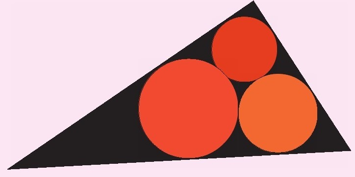
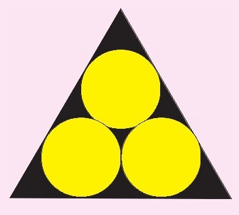
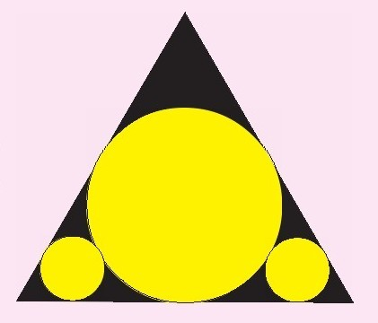
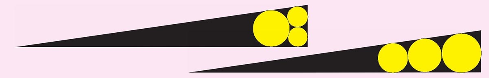
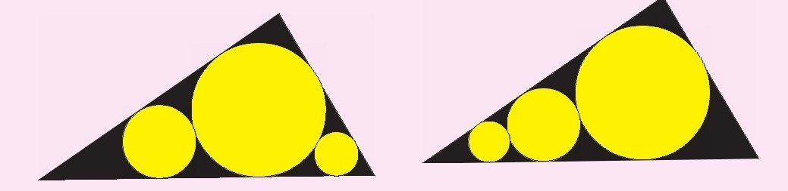
椭圆形桌子——1821年
1821年，约翰·杰克逊在《冬夜里的理性娱乐》一书里，提出“将一张圆形桌子切割成两张完全一样的椭圆形桌子，使每一张桌子中间都有一个细长的洞”这个经典问题。他给出的解答方法如是将这张桌子分割为八个部分，右图所示。山姆·劳埃德在他的著作《5000个谜题的百科全书》里，将桌子按右边的方式分割为六个部分，就解决了这个问题。但是，他继续寻找片数最少的解答方法，很快就发现了四片式的解答方法。
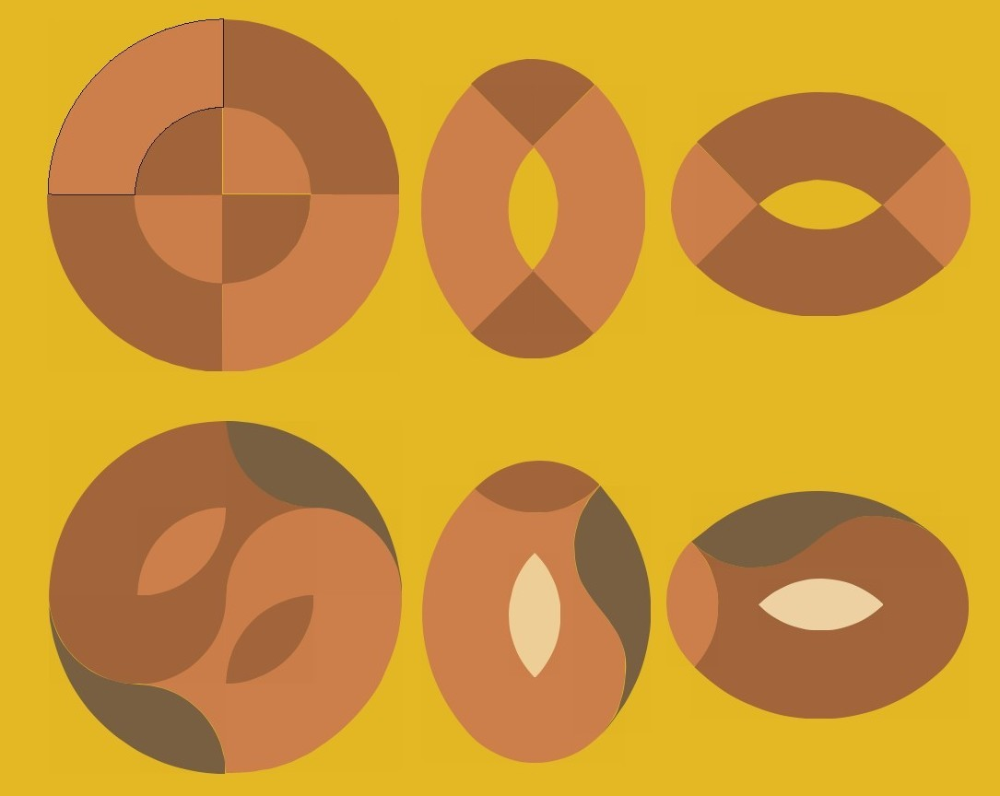
拿破仑定理——1825年
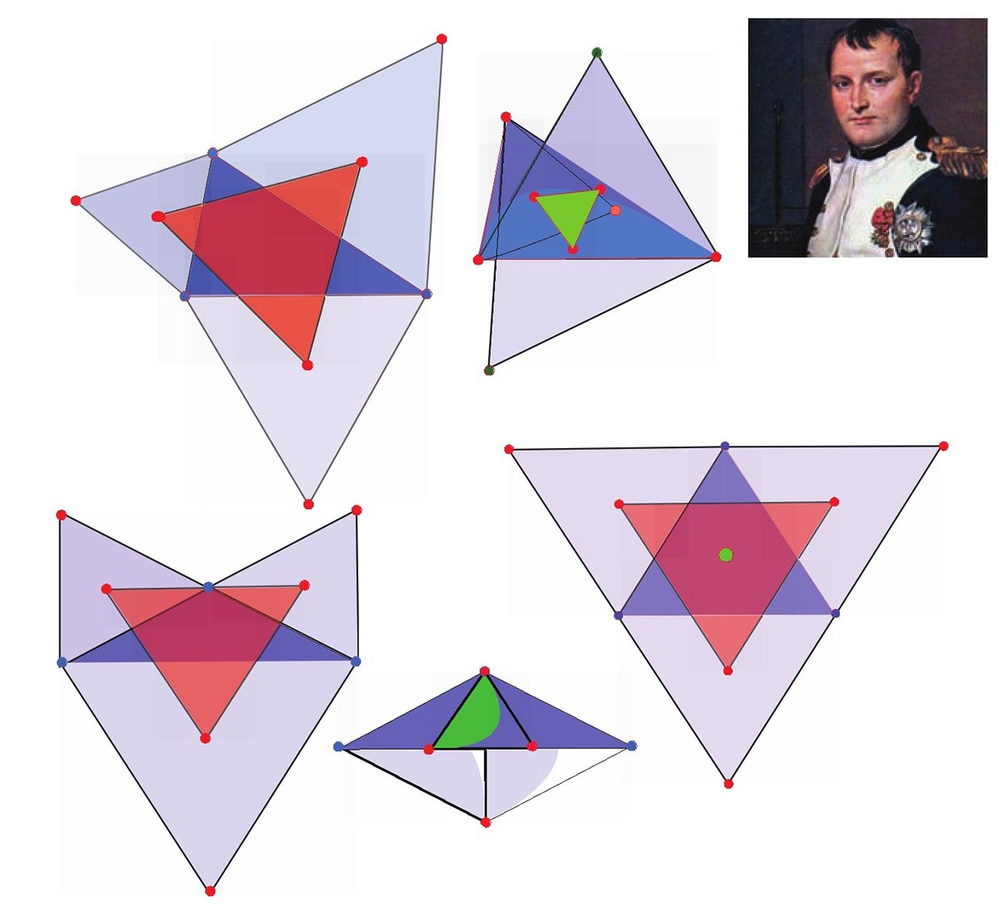
拿破仑定理是这样阐述的：如果以任何一个三角形的一条边为边长构建一个等边三角形，无论这个等边三角形是外接的还是内接的，这些等边三角形的中心本身就可以形成一个等边三角形。
这样形成的三角形就被称为拿破仑三角形（无论内接还是外接）。这两个三角形面积之差等于原始的那个三角形面积。
拿破仑定理通常归功于拿破仑·波拿巴（1769—1821）。拿破仑算得上是一位业余数学家，但他是否发现并解答了这个问题，至今仍没有定论。
切三个蛋糕——1826年
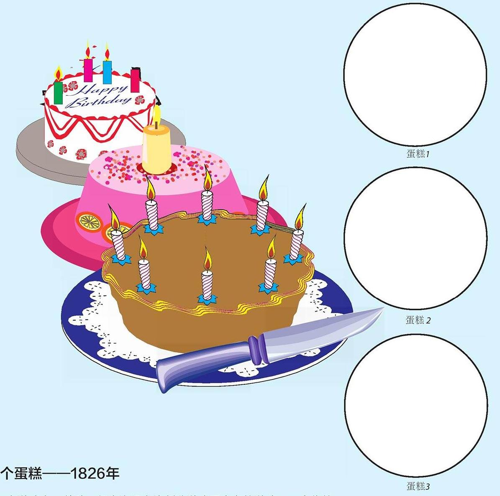
智力游戏有无数种。但也许没有比剖分游戏更古老的游戏了。古代的中国人解答的问题，就跟19世纪提出的这个切蛋糕问题很类似。
在一个生日聚会上，用一把直刀将三个蛋糕分成34份，然后分给34个小孩。这把直刀要在蛋糕上最少切多少刀，才能让每一个孩子都得到一份蛋糕呢（每个孩子不一定都得到分量一样的蛋糕）？
这种切割要满足一个条件：每个蛋糕至少要切两次。在此条件下，每个孩子都能得到一块蛋糕吗？如果我们要求每个孩子都得到分量相等的蛋糕，那么至少需要直线切多少次呢？
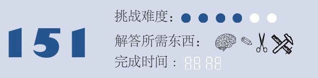
平面分割——1826年
利用一到五条直线，将一个长方形切割成如图所示数量的区域。
在解答了这些问题之后，你能找出用n条直线切割一个封闭的平面区域，从而获得最大的封闭区域的数量（Sn）的一般性方法吗？
你还能想出获得最小封闭区域数量的一般性方法吗？
这个问题是组合几何这一具有美感的数学分支里最简单的问题之一，其中包含图形、线段与数字的有趣互动。1826年，雅各布·斯坦纳第一次回答了这个问题。
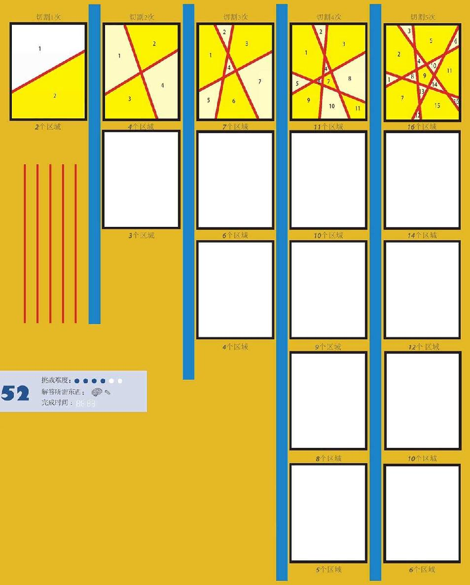
球体、立方体与圆柱体的空间分割——1826年
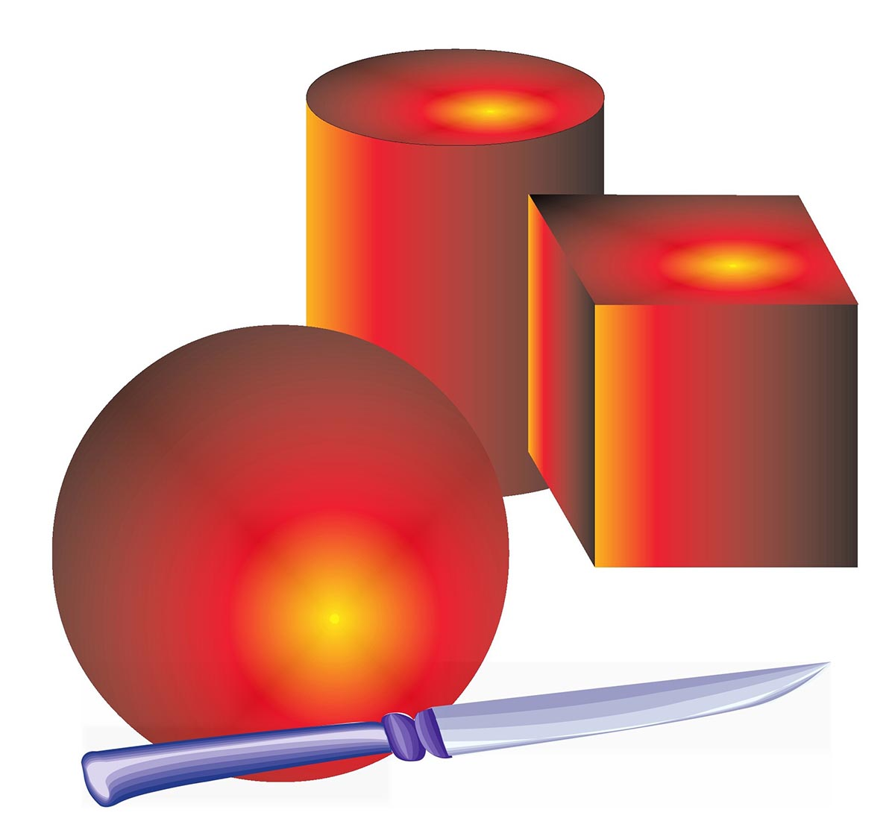
一个球体、立方体与圆柱体在被四个平面切割之后，最多能够分成多少部分呢？
对这个问题进行视觉化的想象，你能推导出被四个平面切分后球体、立方体与圆柱体能产生多少个独立的空间区域吗？
这种分割问题于1826年被雅各布·斯坦纳解答出来了。
与切割平面问题类似，要获得最多数量的分割空间，要求至多两个平面的交线平行，至多三个平面交于一点上。
你可能很容易想到：一次平面切割会产生两个空间区域，两次平面切割会产生四个空间区域，三次平面切割会产生八个空间区域。但是，你能计算出四次平面切割会产生多少个空间区域吗？
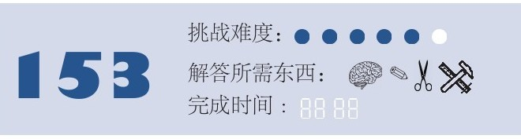
火柴游戏——1827年
英国化学家约翰·沃克在1827年发明了火柴，火柴很快就取代了火绒箱，成为人们点火的第一选择。很快就产生了一种全新的消遣游戏——火柴游戏。火柴公司在火柴包装盒上印刷出这些游戏图后，这些游戏受到了广泛的欢迎。出版商利用公众对此的兴趣，开始出版与火柴游戏相关的书籍。
这里提出的游戏是以经典的火柴游戏为原型的。
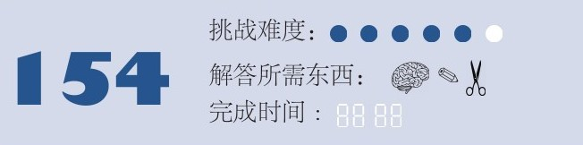
火柴三角形
首先移动四根火柴，创造出两个较小的等边三角形。接着，再移动四根火柴，创造出四个更小的等边三角形。你能做到吗？
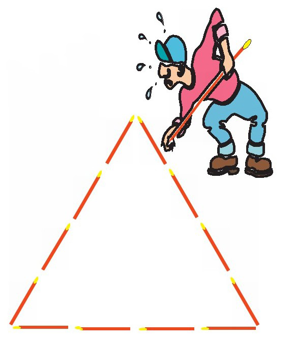
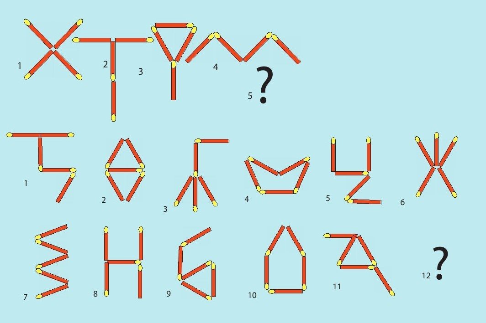
四根火柴与五根火柴
从拓扑学上来说，在满足下面两个条件的情况下，四根火柴能够形成五个不同的图形，五根火柴则能够形成十二个不同的图形：
1.火柴只能在每个端点上接触。
2.火柴都处在一个平面上。
请注意：一旦一个图形形成之后，那么这个图形就能演变成无数种拓扑学上等价的图形，并且不需要将其原先的节点分开。在每组图形里，都有一个图形缺失不完整，你能够将缺失部分找回来吗？
交汇在一点之上的火柴
从一组火柴里找寻图形的有趣问题涉及给定数量的火柴在没有彼此交叉的情况下汇集在一点上的问题。用三根火柴形成的等边三角形是最小的火柴图形，其中，每一个顶点都是由两根火柴汇集在一起形成的。
你能够找出三根火柴在每一个顶点上汇聚的最小图形吗？四根火柴呢？
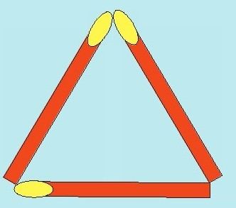
用火柴围成一个小鹿斑比形状
某天早餐的一次会面时，马丁·加德纳向我提出了一个由梅尔·斯托弗创造出来的棘手问题：只改变一根火柴的位置，在不改变其形状的情况下，让这只“斑比”小鹿朝向相反的方向。
当然，镜像与旋转是允许的。
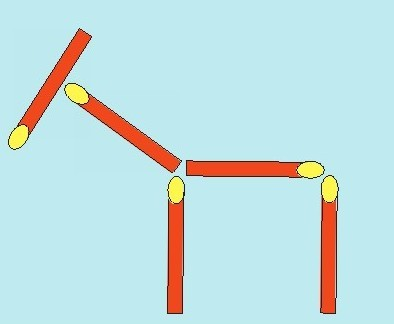
用火柴围成一只小狗形状
一只爱玩的小狗非常莽撞，结果被一辆汽车撞倒了。幸运的是，它还活着，并且被带到了兽医院去治疗。改变两根火柴的位置，想象这只小狗在兽医桌上会是怎样一副模样。
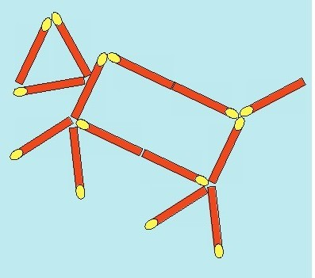
最大悬垂问题
19世纪早期的一个问题：一堆完全相同的积木悬垂在一张桌子的边缘，最多能够突出多远呢？
比方说，如果每一块积木的长度是一个单位，那么3块积木的最大悬垂距离就可以通过一块积木上摞一块的方式去堆积，这就被称为“和谐的堆积”。悬垂的距离大约是一个单位的长度。这样的模式还可以持续下去。在4块积木的“和谐的堆积”里，突出的最大悬垂距离刚刚超过一个单位长度。在有足够多积木供应的情况下，能获得多大的抵消力呢？比方说，在和谐的堆积里，用10块积木堆积后的最大悬垂距离是多少？
1955年，R.苏顿在寻求最大悬垂距离问题上，引入了最优堆积的方法。这种方法提升了和谐堆积方式，允许在连续的堆积层上放超过一块积木。
在最优堆积问题上，3块积木就能够取得悬垂距离为一个单位的结果。你知道这是怎么做到的吗？在最优堆积问题上，使用4块积木能够让悬垂距离超过一个单位。如图所示。
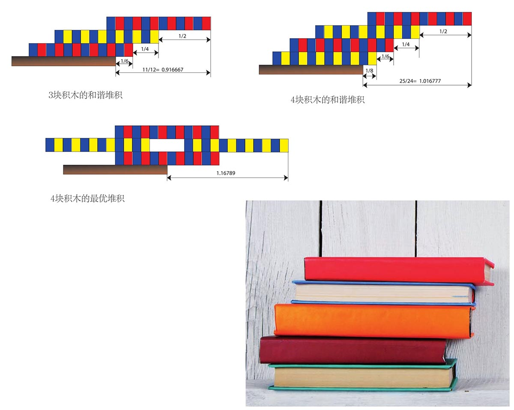
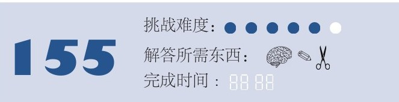
内克尔立方体——1832年
内克尔立方体是瑞士晶体学专家路易斯·阿尔贝特·内克尔（Louis Albert Necker）在1832年首次提出的一种视错觉现象。
这是有关知觉模糊的最早科学演示之一——当我们认真观察这个迷人的简单图形时，就会发现令人吃惊的现象。所谓的内克尔立方体是指等角透视时一个线框立方体呈现出来的线图。
这是三维的立方体里一个二维的框架，前面与后面无法区别。
内克尔立方体与很多之后出现的变相图都说明了一点：我们能够用两种（或两种以上）方式去“看到”某些东西，虽然我们所看到的东西并没有发生改变。
我们在观察一个内克尔立方体时，很难区分看到的是立方体的前面还是后面。你看到的到底是前面还是后面完全取决于你对此的看法。这样的反差并不在绘画本身，而在于你自身的视角。
你主观上首先会以一种方式去观察物体，接着会以其他的方式去进行观察。但奇怪的是，这样的反差暗示了你在空间里所处的位置。当你看到红色平板的方位是水平的时候（可以参看下面的图形），那么整个立方体都是在你的视线之下的，你就是在向下俯视这个立方体。如果你看到红色平板是以垂直方向竖立的，那么这个立方体就在你的视线之上。
因为你无法在同一时间身处两个位置，因此你不可能同时从两个方位去看内克尔立方体。因此，对内克尔立方体的视觉建构就要比我们一开始想象的更加复杂与模糊。我们绝对无法同时看到两个方位，因为我们的视觉系统取决于我们在空间里所处的位置。
相同的推理情况也能运用到所谓的埃舍尔、格里格尔与彭罗斯等人所说的“不可能图形”的绘制上。
隅角立方体
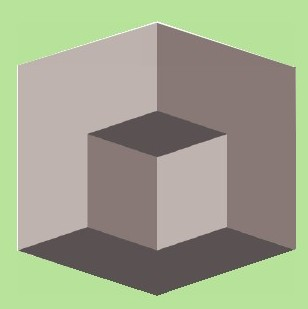
你能看到多少个不同的图形呢？小立方体是在大立方体前面还是在它的内部？又或是从大立方体上面被切割下来，使大立方体缺了一部分呢？
内克尔立方体里的瓢虫
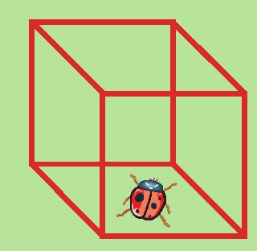
如图所示，你能看到瓢虫在立方体内处于多少个不同的位置吗？
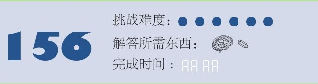
模棱两可的内克尔立方体
如图所示，在你观察这些立方体时，这些立方体似乎会突然反转位置，之前看上去是前面突然变成了后面，反之亦然。内克尔立方体表明，我们所见到的任何东西都只不过是我们视觉系统的“最好的判断”而已。
红色平板会让内克尔立方体看上去不那么模糊，这样你就能清晰地看到每一次翻转与定位。
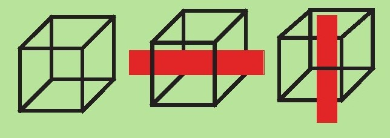
内克尔盒子
当你盯着看内克尔盒子的线框模型时，就会发现，缺掉部分盒壁的立方体，可以翻转成右图所示的任何一种盒子。
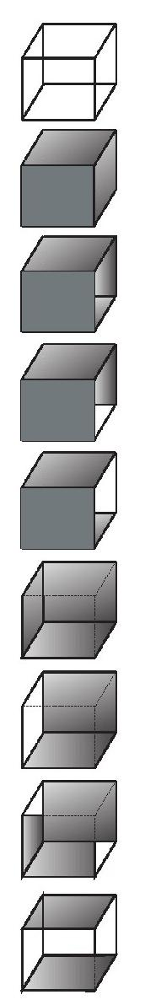
鸽舍原理——1834年
在数学领域，鸽舍原理是这样阐述的：如果n个物体被放入m个鸽舍，并且n＞m，那么至少有一个鸽舍存放的物体多于一个。
这个原理就像现实生活中“在三个手套里，必然至少有两只左手手套或右手手套”一样。
这个定理通过计算就可以证明，虽然看似不证自明，但它还是能够给出一些出人意料的结果。比方说，住在伦敦的两个人都有相同数量的头发（参见下文）。
约翰·狄利克雷（Johann Diri-chlet）被认为是提出这种原理的第一人，1834年，他以抽屉原理来为它命名。正因为如此，鸽舍原理通常也被称为狄利克雷盒子原理，或简单地说成“狄利克雷原理”。
头发数量的谜题
在今天世界上所有活着的人中，有没有两个人的毛发数量是完全相等的呢？
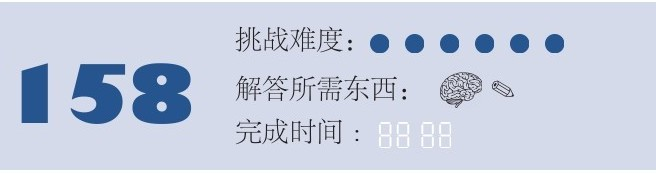
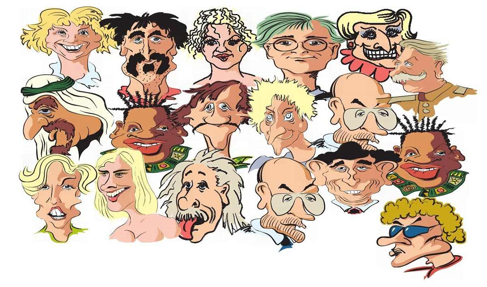
50个邮箱谜题
邮递员将151份邮件送到50个邮箱。在所有的信件都被派送之后，肯定有一个邮箱里的邮件要比其他邮箱里的邮件多出一份。
一个邮箱所能装的最少邮件数量是多少呢？
米克尔的五圆定理——1836年
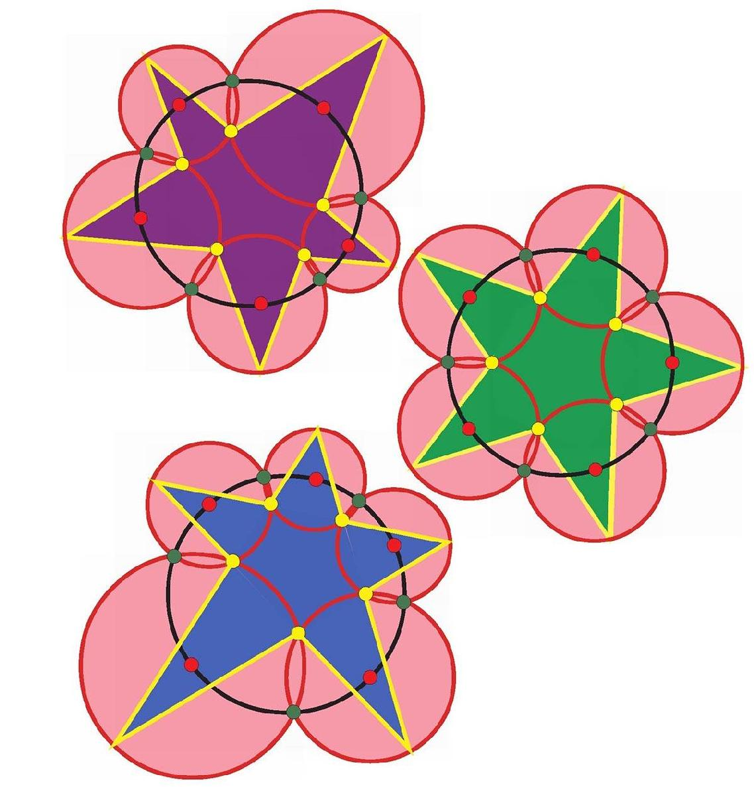
如图所示，五个红色圆的圆心都在一个固定的黑色圆上。每个圆都与相邻的圆在两点上相交，其中一个点在固定的黑色圆（绿色的点）上，另一个点在固定的黑色圆（黄色的点）内。将相邻的黄色点连接起来，一个不规则的五角星形就形成了，这个五角星形的五个顶点都在五个圆上面。请问，无论这五个圆的大小如何，这种情况总是会发生吗？你可以试试看。
奥古斯特·米克尔（Auguste Miquel）的五圆定理是这样阐述的：若是五个圆的圆心都在第六个普通的圆上，并且在相同的圆上链式相交，那么连接它们的第二个交点就会形成一个五角星形，而且这个五角星形的每个顶点都在这五个圆上面。
六圆定理（一）
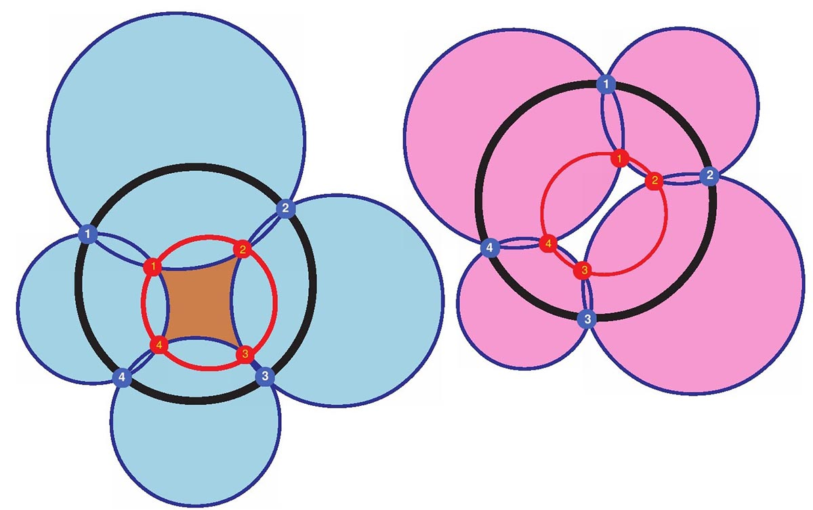
另一个有趣的问题是米克尔的六圆定理：如果一个圆上的四个点与穿过这四个点的四个圆（如图所示）各有两个交点。那么，这四个圆的第二个交点也会落在这个圆上。
如果初始圆变成了一条直线，这样的情况还会出现吗？你不妨一试。
六圆定理（二）
在一个三角形里，画出一个与三角形两边相切的圆。
接着，画出另一个与之前那个圆相切，并且与这个三角形两边相切的圆。
接着，按照这样的方式继续进行。
结果令人惊讶：一连串相互正切的圆，当第六个圆与第一个圆正切的时候，这一过程就结束了，形成一条完全封闭的相切链条。
即便某些圆是在三角形之外，这样的情况也总会出现吗？你不妨一试。
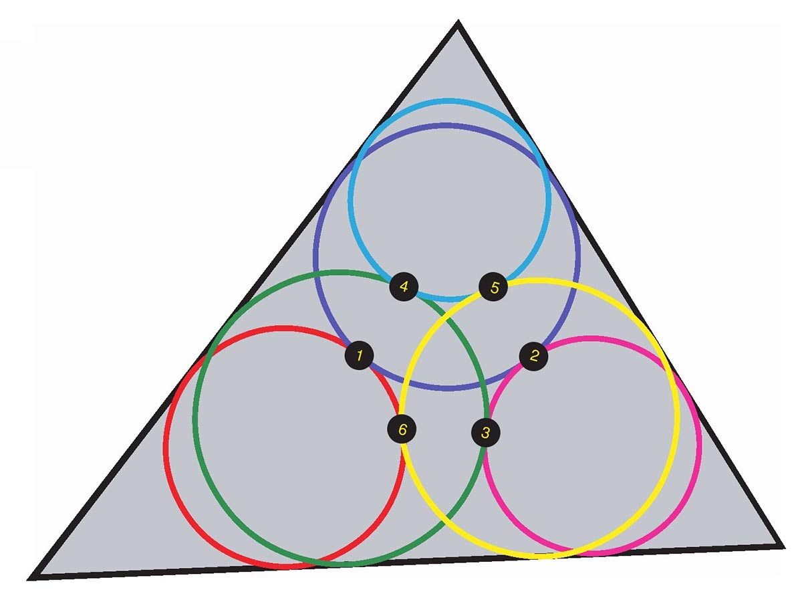
七圆定理（一）
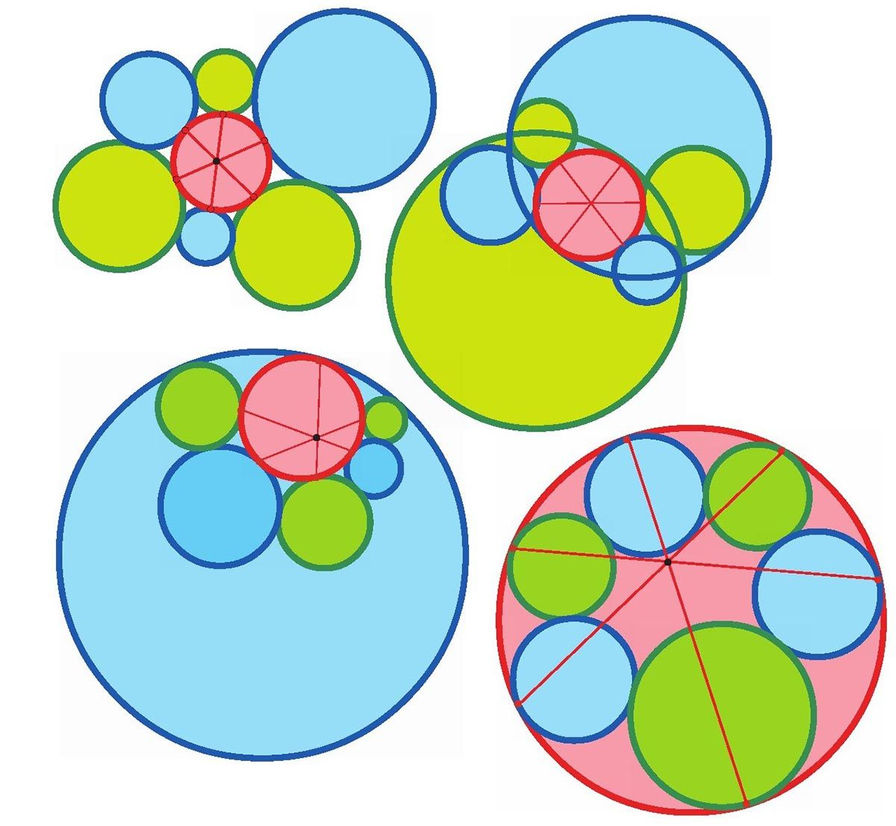
从一个红色圆开始，让六个圆与这个红色圆相切，并且让这六个圆分别与相邻的两个圆相切。连接对面的切点形成的三条直线交于一点。
可能会存在不同的组合形式，左图给出了四种可能性。
如果三个圆（蓝色与绿色）的半径趋于无穷大的时候，你能想象出将会发生什么吗？
（这一定理是伊夫林、莫尼·库茨与蒂勒尔在1974年共同发现的。）
七圆定理（二）
六个完全相等的圆形成一个如图所示的图形，并且和第七个与它们大小完全相等的圆相切。
当我们在六个外圆的基础上加入一个圆，那么这些圆就形成了两组图形。六个完全相等的圆在一个大圆里面、小圆外面。小圆的直径是大圆直径的三分之一。
你能计算出红色与黄色这两组图形的面积吗？
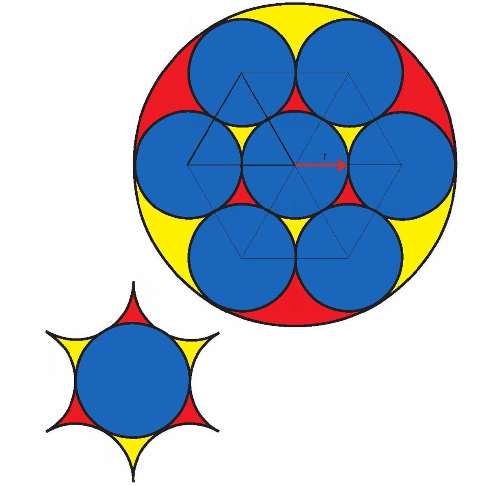
九圆定理
九个相切的圆能够出人意料地形成一个封闭的链条。
在一个平面上画出标记为1、2、3的三个圆，然后画出与圆2和圆3相切的第四个圆。接着，你可以画出八个与之前圆相切的圆，再加上初始三个圆中的两个圆。虽然一系列逐个相切的圆都有不少自由的选择，但第九个圆与最后一个圆仍然与链条上的第一个圆相切。你可以试试看。
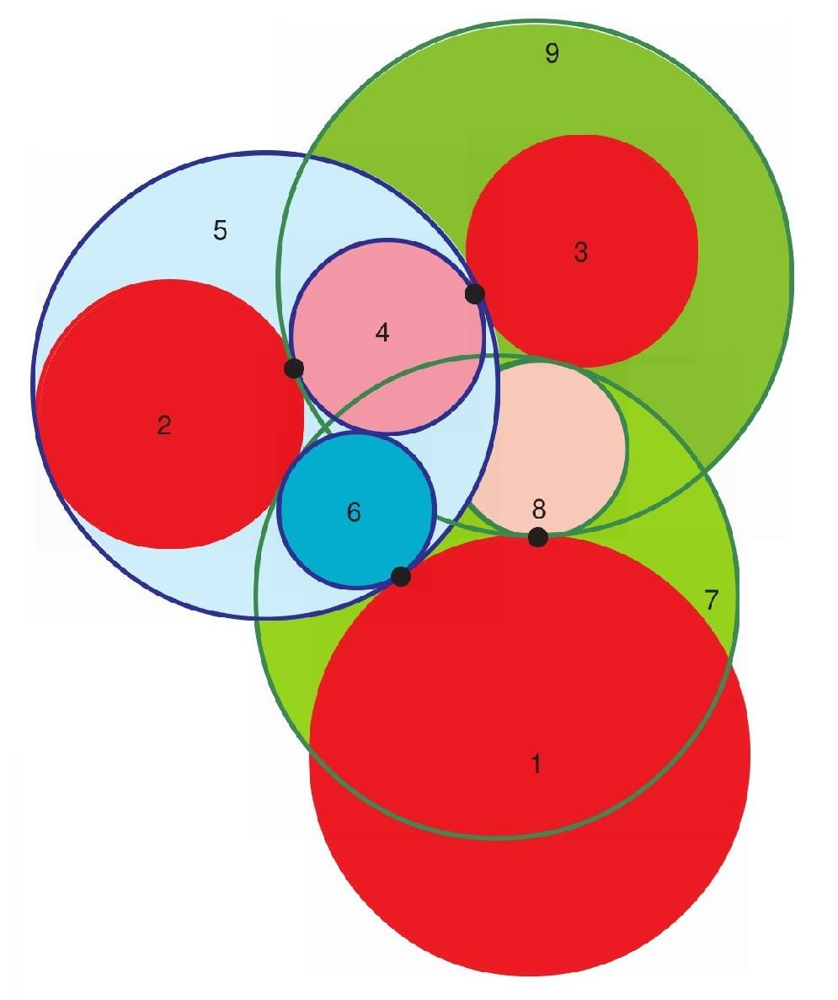
九点圆
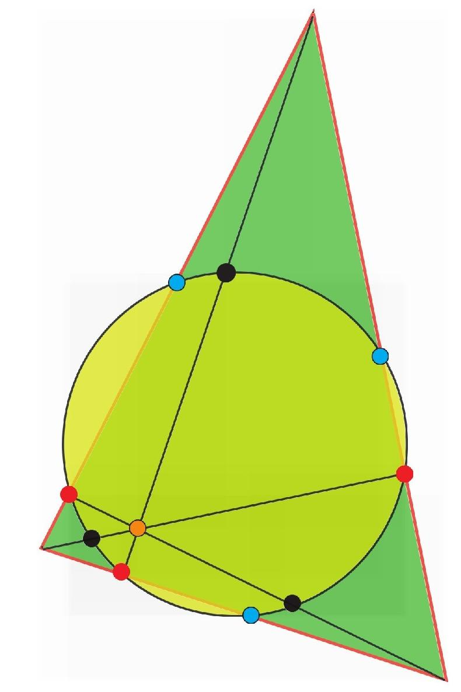
对于任何给定的三角形来说，都可以做出一个九点圆。之所以会有九点圆的名称，是因为对于每个三角形来说，这个圆都会经过这个三角形的九个特殊点。这九个点是：
——三角形每条边的中点。
——每条垂线的垂足。
——从三角形的每个顶点到三条垂线的交点所形成的三条线段的中点。
九点圆又被称为费尔巴哈圆，这是以德国著名哲学家安德烈亚斯·冯·费尔巴哈（Andreas von Feuerbach，1804—1872）的名字命名的。
对一个锐角三角形而言，九个点中的六个点（三条边的三个中点与垂足）都在三角形的边上。对一个钝角三角形而言，两条垂线的垂足都在三角形之外，但这些点依然属于九点圆。
科克曼女学生问题——1848年
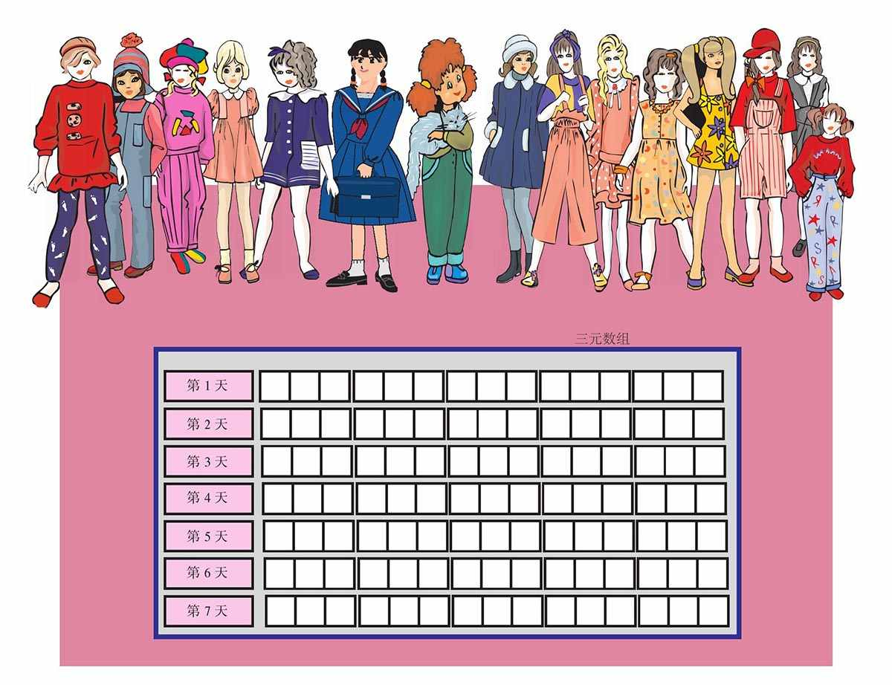
托马斯·P.科克曼（Thomas Penyngton Kirkman，1806—1895）牧师是一位业余数学家。他在1848年提出了一个著名的组合数学问题。这个问题是这样的：“十五名在校女生以三人为一组，她们要在七天内分五组去散步，规定任意两名女生出现在一组的次数不能超过一次，该怎么安排呢？”
这个问题可以用数学语言描述为：从1到15这十五个数字（每个数字都代表着一个女生），将它们分入七个矩阵，使每一个矩阵对应一个星期中的每一天，要求五组三元数组（三个女生分为一组）中任意两个数组在同一个矩阵里出现的次数不能超过一次。该如何分组？
上面的图形将七个矩阵形象地表现出来了。一共有七种独特的解决方法，你能找到吗？
数字1到15能组成多少种三元数组呢？在所有可能的组合里，一共有35组可以解答这个问题，这已经是一个非常大的数字了。正因为如此，要想解答这个谜题其实并不容易。科克曼的谜题对揭示矩阵理论有着重要的意义。
从数学角度去看，一个矩阵就是数或符号，根据某些预先要求的模式，以行或列的方式分布开来。
科克曼的女学生问题是一个具有美感的古典组合数学问题，涉及斯坦纳三元数组。一个斯坦纳三元数组系统就是将n个物体（数字、符号等）以三个一组的方式去排列，使三元数组里的每一对物体只能出现一次。一般来说，斯坦纳三元数组系统有可能适用于任意数量的n个物体吗？
八皇后问题——1848年
与棋类游戏中棋子摆放相关的问题，几百年来一直让谜题专家乐此不疲。
你能在棋盘上摆放八个“皇后”棋子，使得任何一个“皇后”棋子都不会被另一个“皇后”棋子“吃掉”吗？（记住，“皇后”棋子可以按直线、垂线或对角线方向移动到棋盘上的任何空位。）
这个问题是马克斯·贝策尔（Max Bezzel）首先提出来的，这个问题曾被视为消遣数学中的一颗“珍珠”。
这个问题有十二种解答方法。你能想到多少种方法呢？当n取5到7时，你至少能找到一种解答这个问题的方法吗？
默比乌斯的魔法——1850年
默比乌斯环是一个美丽而又神秘的扭曲状物体。19世纪德国数学家A.F.默比乌斯（1790—1868）发现，让一个平面只拥有一边与一角，并且没有“内部”与“外部”之分是可能做到的。你可以用一种颜色去描绘出来。
假设一支箭在一个默比乌斯环上前行，它将会在转了一圈之后又回到之前出发的地方，这个地方将处于默比乌斯环的“反面”。
虽然这样的物体是我们难以想象的，但制作出一个默比乌斯环却是很简单的：截取一段普通的纸张，扭曲一端，然后用胶水将两端粘在一起。
默比乌斯环的各种变异形状是无数种有趣结构与谜题的原型，它们具有的许多令人惊讶与自相矛盾的属性使拓扑学得到了真正意义上的发展。其中一些属性是可以展现出来的。玩默比乌斯环是很有趣的。但是，默比乌斯环是否具有任何实用价值呢？传送带就是按照默比乌斯环的原理做成的，两个“面”都具有相等的摩擦力与牵引力。一些盒式磁带也会让磁带扭曲成默比乌斯环的形状，从而让持续播放的时间增加一倍。
默比乌斯环的二等分与三等分
沿着红线的中心位置去切割默比乌斯环，直到你回到切割的起点。你会得到什么结果呢？
接着，你可以沿着距离边缘三分之一处的绿线去切割默比乌斯环，你又会得到什么结果呢？
克莱因瓶——1882年
科学家们将克莱因瓶——最初由德国数学家菲立克斯・克莱因（Felix Klein）提出——定义为一种无定向性的平面，通俗来说，它就是一种二维形式呈现出来的平面，你无法对这种平面的左面与右面进行始终如一的定义。
如果一个平面有两个面，那么这个平面就是可定向的。我们可以将其中的一面定义为正面，将另一面定义为反面。
任何具有默比乌斯环属性的平面都是无定向性的。不过默比乌斯环有边界，克莱因瓶却没有边界。相比之下，球体具有可定向的面，但却没有边界。
克莱因的瓶子沿曲线切割形成两个默比乌斯环
默比乌斯环
直到你创造出了一个默比乌斯环，你才会明白，原来只具有一个面的表面是存在的。
默比乌斯环是最简单的只具有一面的表面。默比乌斯环有边界，而球体则是没有边界的。
一个只有一面的表面是否真的可以没有任何边界呢？答案是肯定的，但是这样的表面不可能存在于任何三维空间里，除非这个表面与自身相交。
如图所示，你可以看到一个具有美感的克莱因玻璃瓶，这是艾伦·本内特制作的。这个克莱因玻璃瓶在一条较小的圆形曲线里与自身相交。拓扑学家在考虑一个理想状态下的克莱因瓶时，往往会忽略这样的相交情况。
——莱奥·莫泽（1921—1970）
默比乌斯连体
如图所示，将一张纸条切割出两个纵向的凹槽。
将纸条的上半部分以半扭曲的方式连在一起，从而让A点连接着A点，B点连接着B点。然后，再将纸条的下半部分连在一起，但是朝着相反的方向扭曲，将A'点与A'点连接在一起，B'点与B'点连接在一起。
你就会得到如图所示的图形。
如果你沿着红线去切割这个结构，你能想象到会出现什么结果吗？
真假默比乌斯
马丁·加德纳将奥罗拉的乔塞亚·曼宁给他寄来如图所示的纸张结构展现出来，向他的读者提问，这个表面在拓扑学上是否与一个默比乌斯环相等呢？
如果我们沿着红线去切割这个表面，你知道会出现什么结果吗？
傅科摆——1851年
我们是怎样知道地球在转动的？从柏拉图那个时代到16世纪的诸多天文学家都认为，地球是静止不动的，而其他星体则围绕着地球旋转。
与这样的观点相反的理论并不少，但问题就在于许多天文学家都无法找到反驳这个观点的令人信服的证据。我们当然感觉不到自己置身在一个移动的地球上，但是我们真的能够看到地球在转动吗？
我们是否真的有可能看到地球在转动呢？
1543年，哥白尼将他的著作《天体运行论》送给教皇保罗三世，同时还写了一句著名的谦逊之语：“我可以很容易地想到，人们一看到这本书中描述的地球在转动的观点，一定会叫嚷起来；而我和我的理论立刻就会被他们所拒绝。”
在1851年举办的巴黎展览会上，法国物理学家让·贝尔纳·傅科（Jean Bernard Foucault）受邀前来，做了一番科学演示，可还是有不少人不愿意相信这一理论。
傅科在万神庙的拱顶上悬挂了一个钟摆，这个钟摆是由一根61米长的钢琴线与一个27千克重的加农球组成的。在加农球下面的地板上，傅科涂抹了一层细沙。在加农球的底部固定着一根铁笔，用来追踪球体在沙子上划过的痕迹，记录钟摆的运动过程。一小时之后，沙子上的线已经移动了11度18分。如果这个钟摆始终处于同一个平面，它怎么会在沙子上留下不同的轨迹呢？
傅科的钟摆演示肯定是有史以来最具美感与震撼力的科学演示之一。到目前为止，在世界各地的科学博物馆与科学展览馆里，经常还可以看到这一演示模型。傅科对科学的巨大贡献就在于他制造的钟摆，让每个人都能很好地理解地球是转动的这一复杂的思想。
巴黎万神庙的傅科摆
四色定理——1852年
1852年，21岁的弗朗西斯·格恩里（Francis Guthriee）阐述了直到最近才被称为“四色定理”的法则。这个定理阐述起来很简单，但要想加以证明却并不容易。
要想对地图上的每个部分都进行着色，从而让相邻的区域（相邻区域是边接触，而不只是点接触）都没有相同的颜色，共需要多少种颜色呢？
显然，我们不难想到至少需要四种颜色。19世纪，一位名叫肯普的数学家证明，任何一张地图都不需要五种颜色去着色。十年之后，人们发现肯普犯了一个不易察觉但致命的错误，那就是他在证明过程中只得出了任何地图都不需要六种颜色来着色。从那以后，这个问题就留下了一个诱人的缺口。
在接下来的100年里，不少数学家都在研究这个问题。没有人找到一张需要五种颜色着色的地图，但是也没有人能够充分证明这样的地图不存在。这个问题作为最简单的悬而未决的经典数学问题而声名狼藉。更糟糕的是，更复杂表面上类似的问题都已经得到了充分的证明。比方说，一个圆环图上的地图始终都可以用七种颜色着色，也存在着只用六种颜色就能做到的圆环图。要给一个名为克莱因瓶的只有一个表面的古怪形状分区涂色，六种颜色就足够了。
20世纪70年代末期，伊利诺伊大学的两位数学家利用超级计算机解答了这个问题，最终回答了四色定理的问题。因此，我们现在可以将之称为“四色定理”了，其他很多具有美感的拼图都是基于这个定理的。
在为地图着色的时候，我们就预见到这个过程会面临许多死胡同，看上去需要第五种颜色，从而让这个问题与拼图游戏变得更具挑战性。肯尼恩·阿佩尔与沃尔夫冈·哈肯（Wolfgang Haken）首次运用电脑具有的超级运算能力工作数千小时，从而很好地解出了四色定理。
这是第一个无法通过手工计算加以证明的数学定理。
着色的图案
对这些图案进行着色，让两个相邻的区域没有相同的颜色。你需要使用多少种颜色呢？
第五种颜色
1975年4月1日，马丁·加德纳发布了威廉·麦格雷戈设计的着色图（左边），这一着色图至少需要用到五种颜色。右边的这张图还没有着色，你能做得更好吗？
鸡尾酒杯
三个鸡尾酒杯放在一个水平位置上，下面是三个形状的东西，其中一个是圆形，另外两个则是不规则的图形。
要是这三个图形可以转动，会出现什么情况呢？鸡尾酒会洒出来吗？
勒洛三角形与勒洛多边形——1854年
圆就是最简单的“等宽”封闭曲线——这条等宽曲线就是这个圆的直径。正因为如此，多年前使用的圆柱滚子才是将重物从一个点移动到另一个点的理想形状。
除了圆之外，是否还有其他的曲线也具有相似的属性——也就是等宽的曲线呢？可以说，这样的曲线是数不尽的。
最简单的一种等宽非圆曲线就是勒洛三角形，它是以德国工程师弗朗茨·勒洛（Franz Reuleaux，1829—1905年）的名字命名的，虽然莱昂哈德·欧拉在18世纪已经知道了这个形状。勒洛三角形形状也可以在建于13世纪的布鲁日圣母大教堂的窗户上找到。
这种曲线在每个方向上的宽度都等于等边三角形的边或三角形顶点到对面弧形的垂直距离。这也是两条与图形相切的平行线之间的距离。即便这样的曲线转动起来，这个距离也是一样的。
勒洛三角形及其具有的机械属性可以在汪克尔1957年对内燃机的初始设计里找到实际的应用。
这样的图形是很容易建构出来的。你可以画出一个等边三角形，然后以三角形的每个角为中心，画出一条经过另外两个角的圆弧线。在勒洛三角形具有的诸多惊人属性里，有一个属性就是它的周长与宽度的比例也等于圆周率π的数值。
勒洛三角形是最简单与最著名的等宽勒洛多边形，勒洛多边形的数量是无限的。
三角形轮子
三角的曲线形状在一个固定的正方形框架里转动。
你能想象“三角形轮子”上的蓝点的运动轨迹吗？
威廉·罗恩·哈密顿（1805—1865）
威廉·罗恩·哈密顿（William Rowan Hamilton）是爱尔兰物理学家、天文学家与数学家，他是一个神童，在经典力学、光学与代数学方面做出了重要的贡献，发现了许多新的数学概念与技术。他最伟大的贡献也许就是对牛顿力学的重新定义，现在被称为哈密顿力学。他的研究成果奠定了现代电磁学的核心理论，也大大推动了量子力学的发展。在数学上，他最为世人称道的也许是他发现了四元数。
环绕十二面体的“旅行”——1859年
我们已经做过平面上的遍历题，但更难的是在三维物体上寻找遍历路线。其中一个经典的例子就是威廉·罗恩·哈密顿在1859年发明的。这个例子与十二面体有关。哈密顿提出的问题是，是否存在一条遍历各边的路线，这条路线在经过20个顶点之后，会重新回到起点（这条路线被称为哈密顿回路），且路线中并无折返。
请注意：在哈密顿路或哈密顿回路里，所有的顶点都是必须要经过的，虽然其中一些边可能没有经过。为了更加容易地解决这个三维问题，哈密顿利用了一个十二面体的二维图表（这就是所谓的施莱格尔图表），从拓扑学层面来看，这与三维的物体是等价的。哈密顿发现了数学的一个分支，从而解决了三维物体上与回溯路线相关的问题，这就被我们称为顶点微积分学。他的顶点游戏拼图已经得到了商业应用，就是将一个十二面体图形的节点打成洞形成的一个拼板游戏，这种游戏发明后不久就以多种形式在欧洲多个国家里销售。
有向图剖分——1857年
如果在一个图形的每条线上加上一个箭头，让每条线都有一个方向的话，那么这个图形就变成了有向图。一个完整的有向图就是指一个图形里的每两个点都用箭头连接。如图所示，这就是一个七点完全图。
这个游戏的目的就是通过在每条线上添加“一个箭头”，使之转变成一个完整的有向图，让任何两个点都只需一步就能与任意的第三个点连在一起。比方说，我们给三条线加上箭头，对于点1与点2而言，我们可以看到，只需要一步就可以从点7到达它们。
你能在这个图形剩下的线上加上其他的箭头，完成上述目标吗？
有向图的概念是图论里最丰富的一个部分，主要是因为这个概念能够用来解决物理学上的问题。
世界旅行图
如图所示，选择到任意一个城市去游玩，并且按照每条线上所指的方向到每座城市旅行，要求到达每座城市的路线不能重复，你可以做到吗？比方说，要想从柏林出发，最终到达伦敦，且在这个旅行途中游览了所有其他城市，你能做到吗？
一个完整的有向图，如我们在七个点上构建的图形，被称为一个巡回。
完整有向图具有一个惊人的属性，那就是无论这个箭头的方向如何，每一个巡回都会形成一条哈密顿路，这条路只能经过每个顶点一次。我们应该注意到，要想完成一条哈密顿路，我们在这个旅程中可能就不会经过某些边。
流动推销员的问题——1859年
与哈密顿回路相关的一个问题，就是流动推销员问题。
流动推销员问题实际上就是要在一个加权完全图里找寻一条哈密顿回路，让所有边的权值之和最小。
完全图是指图中每两个顶点都由一条边连接起来。
加权图是这样一种图形，图中每条边都添加了一个被称为权值的数字（可以是距离或另一个数值）。所有加权值的总和被称为回路的加权值。流动推销员这个问题就是要找到加权值最小的回路。在绝大多数问题中，一个特定的顶点已经被设为起点。
如图所示，你能在五点加权图上找到加权值最小的回路吗？
霍迪克定理——1858年
长度固定的一条弦被点P分为两段，长度分别是p与q，沿着凸状的曲线滑行，滑行曲线的两端始终接触到曲线。给出两个例子：一个圆与一个鸡蛋形状的曲线。点P将会在这两个原始的曲线里分别绘制出一个全新的曲线。圆内部的曲线将是另外一个圆。
问题就是要寻找原始曲线与衍生出来的曲线之间的面积（如蓝色区域所示）。
哈姆内特·霍迪克牧师（1800—1867）于1858年发表了他发现的定理。这条定理阐述了两条曲线之间的面积是πpq，这是一个让人惊讶的结果，因为这个区域的面积与曲线的形状没有任何关系。
哈密顿路与哈密顿回路
欧拉路与欧拉回路关注的是找寻能够覆盖一个图形每条边的路线。哈密顿路与哈密顿回路则主要解答经过一个图形每个顶点的问题，而不需要关注是否经过了图形的所有边。
这类问题是爱尔兰数学家威廉·罗恩·哈密顿爵士首先进行研究的，他对于找寻一个只能经过图形每个顶点一次，然后返回到起点的回路这种问题非常感兴趣，这个回路就是我们今天所说的哈密顿回路。
经过了图形每个顶点，最终却没有回到起点的路线，就被称为哈密顿路。与欧拉路以及欧拉回路不同的是，判断一个图形是否有哈密顿回路，并没有一个快速的方法。
哈密顿回路
谜题一：如图所示，你能在一个有十一点的图形上找到一条哈密顿回路吗？
谜题二：如图所示，从绿圈出发，到达中间较大的红圈，然后再返回，你能找到一条回路吗？如果这不可能做到的话，至少需要回溯几条边才能做到呢？
令人困惑的错觉世界——1860年
在视觉现象中最有趣的就是视错觉，有时也被称为“几何悖论”。
在视错觉情况上，我们看到的事物是我们认为的样子，而不是事物的真实面貌，因为我们之前的人生经验与受到的各种影响都会影响我们看待事物的方式。我们感知系统所具有的这种视觉属性可以广泛应用到日常生活当中，应用在科学、数学、艺术与设计等方面。
我们的观察与感知能力在可靠程度上值得警惕，尤其在测量方面。
视错觉会以其他方式呈现出来，使我们看到的形状似乎能发生变化，也确实如此。用更精确的语言说，我们对所看到的事物的理解，同样基于一套规则。这些是不成文的规则，但却可以通过人生经验习得。
正如逻辑层面上的规则似乎会分解为多个悖论，感知的法则似乎也会出现错误。
当这种情况发生的时候，就会出现错觉。明白这一点，有助于我们清楚了解这些规则的重要性，明白我们是多么依赖这些规则。
我们可以相信：事物可能要比它们看上去更大一些；我们能看到二维平面上的深度，能看到不存在的颜色与不存在的运动形态。
感知的许多方面，都像是一门需要学习的语言。
每天，我们与这个世界的接触，90%都是靠眼睛，除非我们闭上眼睛，关上了解世界的心灵窗户。人的视觉系统并不单纯像摄像机那样，只是直接接收信息，并且对这样的信息加以记录。
眼睛与大脑协同合作，就像一个处理装置，能够对来自外部世界的海量信息进行分析与处理。视觉器官不仅能够排除许多不相关的信息，识别许多不熟悉的信息，而且正如我们所看到的，我们的视觉器官还能在信息有限的情况下运转，“填补”信息的空白。
也许，这就是所谓的“附加原则”，意思是指当我们看到一系列事物的局部，以及剩余部分的暗示时，就可以呈现事物的全貌。
艺术创作在很大程度上就基于这种填补、补充与组织，我们一般人的视觉系统也是这样运转的。一般说来，感知系统具有更多神奇之处，你可以通过研究这个问题去发现更多。
在任何情形下，我们都应该意识到，我们的感知系统是存在局限的，无论进行多少训练，视觉系统都无法完全适应某些特殊的任务。解决这个问题的方法就是拓展我们的感知系统——去发明能够帮助提升我们感知系统的工具。
幸运的是，在过往的历史里，每当有现实的需求时，人类总能成功地发明出这样的工具。
措尔纳错觉——1860年
措尔纳错觉是一个经典的视错觉现象，这是以它的发现者，德国天体物理学家卡尔·弗里德里希·措尔纳（1834—1882）的名字命名的。1860年，措尔纳以信件的方式将他的发现成果寄给物理学家兼学者约翰·克里斯蒂安·波根多夫。之后，波根多夫发现了与此相关的波根多夫错觉现象。
如图所示，黑色的线似乎是不平行的，但实际上它们是平行的。较短的线与较长的线形成一个角度。这个角度会给人留下这样一种印象，那就是，较长的线的一端要比另一端离我们更近一些。
波根多夫错觉
波根多夫错觉是一种几何光学错觉，一条横线被一个遮蔽结构（在这里是一个长方形）的轮廓所打断，让我们对其中一个部分所处的位置产生错误的认知。
谜题一：在不使用直尺的情况下，你知道哪一条有色线是黑色积木背后隐藏的两条线的延伸吗？
谜题二：只需通过观察的方式，你能说出哪一条有色线是黑色积木背后黑色圆的延伸吗？
三只狗为一组——1863年
谜题一：六个女孩与三个男孩按照三只狗为一组的方式，在十二天里轮流遛狗，每一对都只能出现一次，你能找到问题的解吗？
谜题二：这个问题的一个变种同样是斯坦纳提出的。假设九个孩子在四天时间里按照三只狗为一组的方式遛狗，同样每一对都只能出现一次。在这种情况下，又会形成怎样的组合呢？请填在上面的表格里。
线与连杆——点与线
连杆的运动存在着某些让人着迷的地方。你可以利用纽扣或金属圈轻而易举地将纸片连接起来，做成一个简单的连杆装置。平面上的连杆就是一个通过各个可移动的点去连接其他滚轴的系统，或是通过枢轴将杆固定在平面上，使它们成为能够自由移动的系统。
那么，可以通过点与线的运动，制造出一个连杆吗？早先，人们认为这样的问题是无解的。
将一根木棍一端固定，自由的一端会怎样运动呢？对连杆来说，做圆周运动是很容易的，也是非常自然的。关键就在于如何在没有一条固定直线的情况下，建构一个直线的运动。
这在几何学上不只是一个理论问题。蒸汽机产生的自然运动方式就是转动，虽然它可以通过活塞的直线运动转化而产生，但是活塞需要轴承，而轴承必然磨损。
连杆提供了一个更加令人满意的解决方案。连杆的第一个实用的解决方案是詹姆斯·瓦特（1736—1819）设计的，他发明的蒸汽机也只是近似于连杆而已。
——弗里德里希·尼采
波塞利耶-利普金与瓦特的连杆——1864年
波塞利耶-利普金连杆发明于1864年，这是第一个能够将旋转运动转变为一种完美直线运动的平面连杆。这种连杆是以法国陆军军官查尔斯・尼古拉斯・波塞利耶（1832—1913）与著名的立陶宛拉比犹太人撒兰特的儿子利普曼・利普金（1846—1876）的名字命名的。
在这种连杆发明之前，人们在没有相关指引的情况下，根本找不到一种方法能在平面上产生直线运动。因此，作为一种机器构件，这种连杆就显得特别重要，对制造业来说也是如此。
以传动轴有效密封来维持驱动介质的活塞头就是一个特例。可以说，波塞利耶连杆对蒸汽机的发展至关重要。
波塞利耶连杆体现的数学知识与圆反演直接相关。
萨鲁斯连杆是稍早一点的直线机构（straight-line mechanism），尽管它在当时少为人所关注。在波塞利耶-利普金连杆出现前11年，皮埃尔・萨鲁斯就已经发明了这种连杆。这种连杆包括一系列的铰链式矩形板，其中两个矩形板处于平衡状态，但能够相互关联运动。波塞利耶-利普金连杆是一种平面机构，而萨鲁斯连杆则是三维的，被称为空间曲柄。
观察下面两种连杆装置，你能猜出当蓝色连杆沿着圆形路径旋转时，白色的点所要经过的路线是什么样子的吗？
——列奥纳多·达·芬奇
穿过地球的旅行——1864年
好吧，假设我们已经在地球上钻了一个洞。
这只是一个思维实验。假设一个人掉进了这个洞——如果上帝允许的话，那会出现什么情况呢？
在你的这趟旅行里，我们假设地球的密度是均匀的，而且忽视空气阻力以及地球内部极高温度等因素。
解决问题与谜题游戏
马塞尔·达内西在他那两本著名书籍《骗子悖论》与《河内塔：有史以来最著名的十个谜题》里，就提到了山姆·劳埃德的“逗马”谜题，认为它是展现洞察思维的最好例子，而洞察思维对于解答此类问题是如此之重要。
一般来说，在解决这类问题的时候，有三种不同的策略可以选择：
1.演绎推演：这种策略要求我们之前就要对解答问题所需的知识有所掌握。
2.归纳法：观察问题所包含的诸多事实，通过逻辑推理方式找到解决问题的办法。
3.洞察思维：这种方法可能首先是以反复试验的方式进行的，然后通过猜想与直觉的方式，凭借直觉获得被隐藏起来的答案。洞察思维是人类在数学领域取得重要进步的基础。很多数学方面的问题最初都是被设计成具有挑战性的谜题游戏，其中的数学定理就隐藏在这些谜题游戏里。
“逗马”谜题
“逗马”谜题基于原始的“逗骡子”谜题，这个谜题是美国著名谜题专家山姆·劳埃德发明的。
劳埃德少年时期就发明了这个谜题，该谜题可以说是有史以来最具美感的谜题之一，也可以说是横向思维的一次视觉杰作。
只运用你的想象力，你能以正确的方式把骑手和马鞍放在马背上吗？
如果你无法通过想象回答这个问题，可以将这两位骑手及马鞍剪下来，然后以恰当的方式将马鞍放在马匹的后背上。
提示：这个问题看上去极为简单，只有当你尝试去解答这个问题时，才会发现它并不简单。当你以正确的方式将马鞍放置好了之后，之前看上去疲惫不堪的马匹就会奇迹般地飞奔起来了。
不准耍任何把戏，不能弯曲，允许折叠或剪切。
面对这个谜题时，很多人的大脑都会产生概念性的“积木”，导致无法将骑手放在正确的位置上。但是，解决这个谜题的方法其实非常简单。
劳埃德将“逗马”谜题卖给了P.T.巴纳姆，巴纳姆卖出了数百万份这样的商品，而劳埃德也在几个星期内就得到了一笔超过一万美元的版权费——在那个时候，这可是一笔不小的数目。从此以后，这个游戏的数以百计的衍生版本纷纷面世。山姆·劳埃德的这种“逗马”游戏可能是受到17世纪的墨水画《波斯马》的影响。
——G. K.切斯特顿
——巴克敏斯特·富勒
山姆·劳埃德的火星谜题
从“T”点出发，拜访火星上20个站点，然后拼写出一个完整的英文句子。你必须沿着“隧道”前进，并且不能两次经过同一个站点。
当山姆·劳埃德第一次发布他的“火星谜题”时，他收到了超过一万封回信，很多人都在信中说：“这是不可能做到的。”你能解答这个谜题吗？
几何消失——1871年
“几何悖论”或“几何消失”的神奇图像非常微妙，直到如今仍然让人着迷，令人惊讶，成为人们谈论的焦点。即便在对几何消失的原理进行解释之后，我们依然会对感知系统产生怀疑。
美国谜题发明者山姆·劳埃德是这类游戏最著名的开发者，其中一个著名的游戏就是“离开地球”。
梅尔·斯托弗（Mel Stover，1912—1999）与其他人完善了这种艺术，创造出了一个微妙的变异版本，继续完善这个原理。几何悖论涉及对总长度或总面积的拆分与重组。在重组之后，其中一部分图形就会莫名其妙地消失不见。这背后的解释就是马丁·加德纳所谓的隐藏分布原理，这取决于我们的眼睛对重组之后的版本的容忍程度。我们的眼睛经常会忽视各个部分或重新组装部分之间的细小差别，认为这两个部分都拥有相同的长度或面积。
比方说，如下面左图所示，当下半部分往右平移时，12条垂直的线就变成了11条。
如下面右图所示，当内部的轮子沿着逆时针的方向转动一个刻度，12条轴射线就会变成11条。显然，在这两种情况下，并没有任何东西真正消失。
神奇的铅笔（一）
在下图中，当内部的轮子以顺时针方向转动三个空间位置，那么这幅图中的7支蓝色铅笔与6支红色铅笔就会转变成6支蓝色铅笔与7支红色铅笔，如图所示。你能说出哪一支铅笔的颜色发生了改变吗？这个游戏是梅尔·斯托弗经典谜题的一个全新设计版本。
神奇的铅笔（二）
7支红色的铅笔与6支蓝色的铅笔。想象一下，交换图形下面两个较低部分的位置。你猜会出现什么情况呢？
装箱问题——1873年
装箱问题无论在工业里还是技术上都是很重要的。装箱的目的就是将一组物体装入一定数量的箱子里，让总数（总长度或总体积）不会超过某个特定的数值（也就是打包箱子的体积大小）。
按任意顺序将物体装入首次适合其大小的箱子里，这就被称为“首次适应装箱”，这样做并不是很高效。简单的生活经验与逻辑学将大幅度提升装箱效率。我们可以采用所谓的“首次适应，从最重到最轻”的方法：按照从最重到最轻的顺序对物体进行排列，然后将物体放入箱子里。这种算法的误差绝对不会超过22%。
1973年，戴维·约翰逊在美国电话电报公司任职时，就证明了不可能做到比22%更好。
罗恩·格雷厄姆发现了一个有趣的装箱问题，这个问题与一个违反直觉的悖论存在着联系。这个悖论是这样说的：利用“首次适应，从最重到最轻”的算法，在每个箱子可以装载524千克物体的情况下，需要多少个箱子才能装入如下重量的33个砝码呢？这些砝码的重量（千克）分别是442，252，252，252，252，252，252，252，127，127，127，127，127，106，106，106，106，85，84，46，37，37，12，12，12，10，10，10，10，10，10，9，9。
装箱游戏
根据“首次适应，从最重到最轻”算法来装箱。
要想将这33个砝码全部装在箱子里，需要多少个箱子呢？
现在，若是将46千克的那个砝码拿掉，根据相同的法则重新装箱，又需要多少个箱子呢？
著名的滑块游戏及其背后的故事——1880年
滑动1到15的方块，你能通过将15-14这样的顺序改为14-15这样正确的顺序，使每个数字的方位按顺序排列吗？
滑块游戏的鼻祖，无疑就是著名的“十五格拼图”。直到现在，这个游戏依然以不同的形态与其他版本在市场上销售。
如果你试图破解14-15谜题，可能就会失望地发现，你无法做到。千万不要对此感到气馁！这个14-15谜题多年前就已经被山姆·劳埃德思考过。这个谜题是无解的。
消遣数学历史上有两个拼图游戏曾在世界范围内引发狂热，一个是14-15谜题（这已经是120多年前的谜题了），另一个则是最近出现的鲁比克魔方（参见第9章）。
山姆·劳埃德曾悬赏1000美元，奖给任何能够解决这个谜题的人。他肯定是深信没有人能够获得这笔奖金的。在14-15谜题里有超过6000亿种可能的组合，其中有一半的组合无法将数字恢复到顺序的状态。劳埃德的拼图只不过是其中的一种而已。劳埃德知道，要想将这些积木按顺序排列，只在交换次数为偶数时才有可能。
因此，一个简单的奇偶校验就会让你明白能否找到解答的方法。我们可以将一对数字变换位置，计算变换的次数，直到获得满意的结果。如果变换次数是偶数的话，那么通过滑动方块做出的变换就是有可能的，否则就是不可能的。在电脑语言里，十五格拼图与相似的滑块游戏都是时序机模型。每一个滑块的移动都代表着一种输入，代表着滑块的每一种排列状态。解答这个问题的人很快就会发现，他们深深着迷于找寻能达成目标的最小输入链条。这绝不全是试错！我们很快就会“看到”某些线路会引领我们走向一条死胡同，而其他的线路看上去则很有希望，而且你的直觉最终会带领你找到解答。
山姆·劳埃德宣称他发明了十五格拼图。事实上，这个游戏是诺伊斯·帕尔默·查普曼（Noyes Palmer Chapman）这位纽约加纳斯托塔地区的邮政局长于1874年发明的，被冠以“宝石拼图”的名字。1880年3月，他申请专利，但遭到了拒绝，因为专利局的人认为这与欧内斯特·U.金西在1878年发明的“拼图块”专利（US207124）并没有明显的区别。
想了解十五格拼图的真实故事，可以查阅斯洛克姆与松内维德有关十五格拼图的有趣书籍。